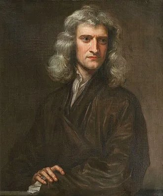

INTJ艾萨克·牛顿1643–1727
他是谁1643 年生于英格兰伍尔索普。1665 年剑桥因瘟疫停课，他回乡的两年里完成微积分雏形、光的色散实验与万有引力思路；1687 年《自然哲学的数学原理》出版。晚年他出任皇家铸币厂厂长、皇家学会会长。
功能如何落地Ni 让他先在头脑里构建宇宙如何运行的模型，再回头寻找能支撑它的证据；Te 把这份直觉翻译成可验算的公理体系——《原理》以定义、定律、推论层层推演，几乎不留一句修辞。他对炼金术与年代学的长期投入，同样是"先建体系、再搜寻"的同一套模式在运转。
给同类型的提醒先想透终局再动手，是这个类型最锋利的杠杆；但要给自己留一个能证伪体系的实验出口，否则洞见会退化成固执。
另一位代表 · 女简·奥斯汀1775–1817
她是谁一生住在乡间，把婚配、财产与体面写成六部小说，让「谁嫁给谁」变成对阶层规则的解剖。
功能如何落地Ni 先看清人情背后的长期结构，Te 再用精确到近乎冷酷的句子把它固定成可验证的判断。
给同类型的提醒洞察不必高声，把它写成别人能反复读的形式，才算真正落地。